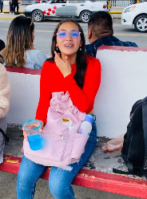
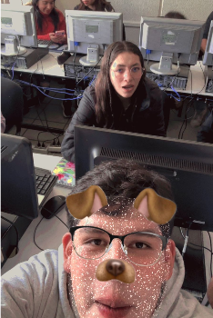
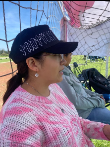

Para Ratitaaa
Abreme
Para Ratitaaa
El problema no fue que yo tomara las fotos, sino que andabas en la lela

dale click para ver la siguiente foto
Ese azulito te animo a entrar a la Santa nuevamente

dale click para ver la siguiente foto
La verdadera primera foto que tenemos jajajaja

dale click para ver la siguiente foto
Todo que ver la gorra JAJAJA